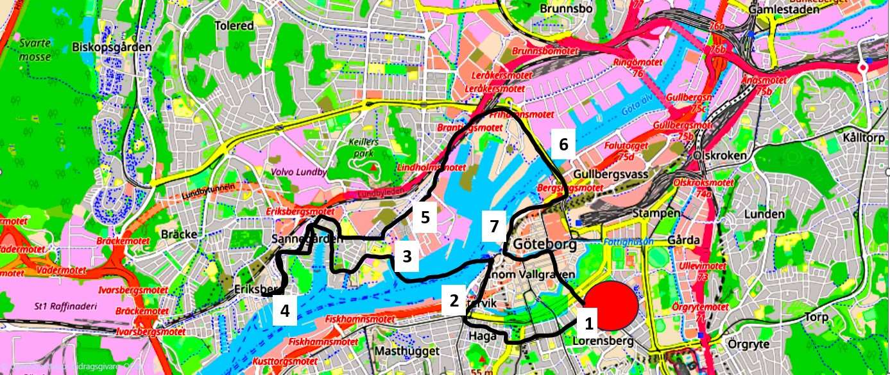
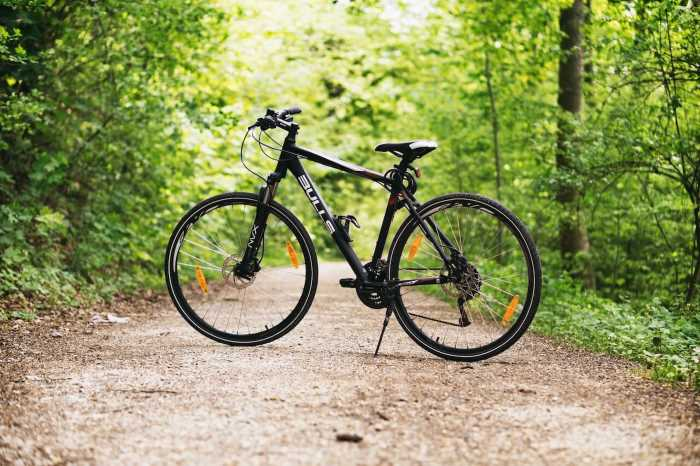
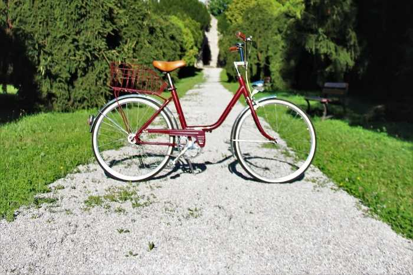
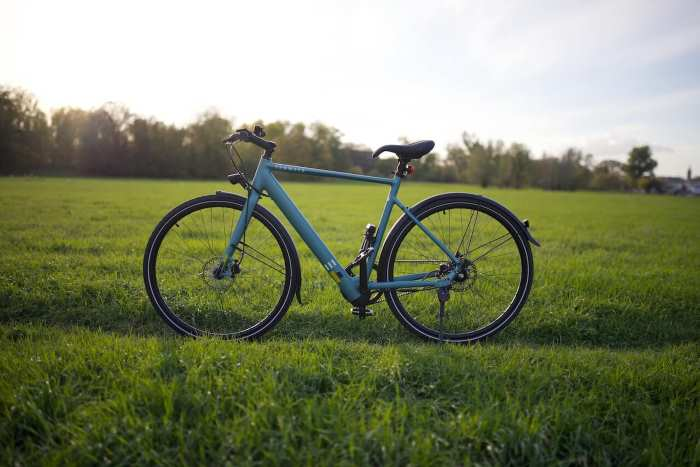
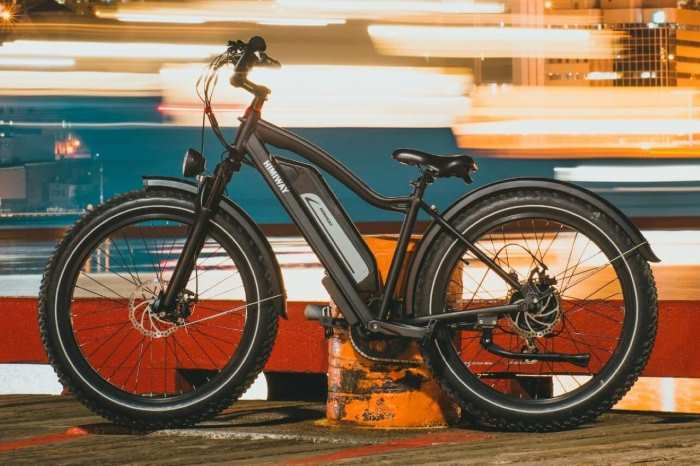

City bike tour Saturdays & Sundays (May - Sep)
SIGN UP HERE!
Gothenburg tour map
1. Vasagatan
Vasagatan is a side street from “Avenyn”
which is
Gothenburg’s
main boulevard, the street is taking us to Haga and Järntorget. In this first section of the
tour, we will
pass
Handelshögskolan (School of Business, Economics and Law) and Hagakyrkan (the Haga Church).

2. Haga/Järntorget
The area was established in the 1630's, the population started to grow a a couple of decades later. The habitants were mostly dock workers. Today it is popular among tourists, and you will find many souvenir shops here, the cobblestone streets are quite busy at times so we will walk with the bikes in the most crowded parts.

3. Lindholmen
From “shipyards to it-cluster” describes in short, the transformation of Lindholmen. Nowadays it is known has "lindholmen science park" but 40 years ago it was recognized as a word leading shipbuilding industry, however a crisis in the business in the beginning of the 80's leading to almost 20 000 redundancies completely changed the area usage. Currently at least 10 000 people is employed within the It/-tech industry in the science park.

4. Eriksberg
As for Lindholmen, shipyards were situated
in
Eriksberg. A
landmark
Gothenburg
city is the harbour crane "Eriksberg", it was built in 1969 and to protect and preserve the iconic
artifact it
became a listed building in 2012.

5. Karlatornet
We will pass Karlatornet which, when it is
finalized, will
reach 246 m up
in
the sky making it the highest building in northern Europe.
6. Hisingsbron
We will now going back to the mainland using the Hisingsbron (bridge between mainland and the island of Hisingen), the bridge came into use in 2021 replacing the previous outdated bridge, besides a new design, the height of the bridge was reduced by 6 meters (12 meters instead of 18 meters).

7. Göteborgsoperan
The last stop on the tour is the
Gothenburg
opera house,
it was
designed
by the
architect Jan Izikowitz and built in 1994. The building has integrated design features like ship
hulls,
sails
or harbour cranes representing the characteristics of Gothenburg.
About us
Newly moved in town and want to meet new people, or on a visit and wish to find environmentally friendly alternatives to explore Gothenburg. And why not use the opportunity for a healthy bike tour? At Gothenburg cycling trips we offer a sustainable & social event combining everything above. We appreciate are customers input and can offer customized bike tours on request.
Fixed tour
The Gothenburg city tour is scheduled 1400 - 1600 on Saturdays and Sundays between May and September. The tour starts at Vasagatan, the length of the tour is 9 km and we will reach Lindholmen with a ferry (free of charge). In each tour we will have short stops, in stop nr 4 (Eriksberg), "swedish fika" will be served.
Sign up
Rent a bike
We offer rental bikes in 2 various sizes as well as e-bikes, bike helmets are included in the prize. For further questions regarding the bikes on +46 31 1234 1234.
| Size (tires) | Standard/E-bike | Cost/h (SEK) |
|---|---|---|
| 28" | S | 150 |
| 26" | S | 150 |
| 28" | E | 200 |
| 26" | E | 200 |
Standard 28"
Standard 26"
E-bike 28"
E-bike 26"
Contact
Vasagatan 1400 00
Gothenburg
Sweden
Email: gotcycling@example.com
Phone: 0046 31 1234 1234